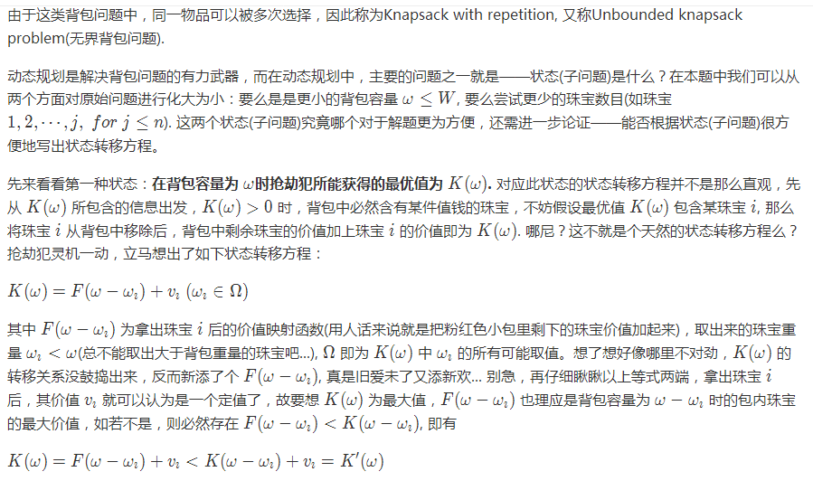

Modulus - 求模运算
有时计算结果可能会溢出，此时往往需要对结果取余。如果有a % m = c % m 和 b % m = d % m, 那么有以下模运算成立。
- (a + b) % m = (c + d) % m
- (a - b) % m = (c - d) % m
- (a × b) % m = (c × d) % m
需要注意的是没有除法运算，另外由于最终结果可能溢出，故需要使用更大范围的类型来保存求模之前的结果。另外若a是负数时往往需要改写为 a % m + m, 这样就保证结果在[0, m - 1]范围内了。
Fast Power - 快速幂运算
快速幂运算的核心思想为反复平方法，将幂指数表示为2的幂次的和，等价于二进制进行移位计算（不断取幂的最低位），比如 x^{22} = x^{16} x^4 x^2.
Java
import java.util.*;
public class FastPow {
public static long fastModPow(long x, long n, long mod) {
long res = 1;
while (n > 0) {
// if lowest bit is 1
if ((n & 1) != 0) res = res * x % mod;
x = x * x % mod;
n >>= 1;
}
return res;
}
public static void main(String[] args) {
if (args.length != 2 && args.length != 3) return;
long x = Long.parseLong(args[0]);
long n = Long.parseLong(args[1]);
long mod = Long.MAX_VALUE;
if (args.length == 3) {
mod = Long.parseLong(args[2]);
}
System.out.println(fastModPow(x, n, mod));
}
}
最大公约数(GCD, Greatest Common Divisor)
常用的方法为辗转相除法，也称为欧几里得算法。不妨设函数gcd(a, b)是自然是a, b的最大公约数，不妨设a > b, 则有 a=b×p+qa = b \times p + qa=b×p+q, 那么对于gcd(b, q)则是b和q的最大公约数，也就是说gcd(b, q)既能整除b, 又能整除a(因为 a=b×p+qa = b \times p + qa=b×p+q, p是整数)，如此反复最后得到gcd(a, b) = gcd(c, 0), 第二个数为0时直接返回c. 如果最开始a < b, 那么gcd(b, a % b) = gcd(b, a) = gcd(a, b % a).
关于时间复杂度的证明：可以分a > b/2和a < b/2证明，对数级别的时间复杂度，过程略。
与最大公约数相关的还有最小公倍数(LCM, Lowest Common Multiple), 它们两者之间的关系为 lcm(a,b)×gcd(a,b)=∣ab∣lcm(a, b) \times gcd(a, b) = |ab|lcm(a,b)×gcd(a,b)=∣ab∣.
Prime
素数：恰好有两个约数的整数，一个是1，另一个则是它自己，比如整数3和5就是素数。素数的基本算法有素性测试、埃氏筛法和整数分解。
素性测试
如果d是n的约数，则易知 n=d⋅ndn = d \cdot \frac{n}{d}n=d⋅dn, 因此 n/d也是n的约数，且这两个约数中的较小者 min(d,n/d)<=n\min(d, n/d) <= \sqrt{n}min(d,n/d)<=√n. 因此我们只需要对前 n\sqrt{n}√n 个数进行处理。
埃氏筛法
素性测试针对的是单个整数，如果需要枚举整数n以内的素数就需要埃氏筛法了。核心思想是枚举从小到大的素数并将素数的整数倍依次从原整数数组中删除，余下的即为全部素数。
区间筛法
求区间[a, b)内有多少素数？
埃氏筛法得到的是[1, n)内的素数，求区间素数时不太容易直接求解，我们采取以退为进的思路先用埃氏筛法求得[1, b)内的素数，然后截取为[a, b)即可。
Knapsack - 背包问题
在一次抢珠宝店的过程中，抢劫犯只能抢走以下三种珠宝，其重量和价值如下表所述。
Item(jewellery) | Weight | Value |
1 | 6 | 23 |
2 | 3 | 13 |
3 | 4 | 11 |
抢劫犯这次过来光顾珠宝店只带了一个最多只能承重17 kg的粉红色小包，于是问题来了，怎样搭配这些不同重量不同价值的珠宝才能不虚此行呢？哎，这年头抢劫也不容易啊...
用数学语言来描述这个问题就是：
背包最多只能承重 WWW kg, 有 nnn 种珠宝可供选择，这 nnn 种珠宝的重量分别为 ω1,⋯,ωn\omega_1,\cdots,\omega_nω1,⋯,ωn, 相应的价值为 v1,⋯,vnv_1,\cdots,v_nv1,⋯,vn. 问如何选择这些珠宝使得放进包里的珠宝价值最大化？
Knapsack with repetition - 物品重复可用的背包问题



Knapsack without repetition - 01背包问题

Shuffle and Sampling - 随机抽样和洗牌


Random sampling - 随机抽样
随机抽样也称为水池抽样，Randomly choosing a sample of k items from a list S containing n items. 大意是从大小为 n 的数组中随机选出 m 个整数，要求每个元素被选中的概率相同。
题解
比较简洁的有算法 Algorithm R, 伪代码如下：
/*
S has items to sample, R will contain the result
*/
ReservoirSample(S[1..n], R[1..k])
// fill the reservoir array
for i = 1 to k
R[i] := S[i]
// replace elements with gradually decreasing probability
for i = k+1 to n
j := random(1, i) // important: inclusive range
if j <= k
R[j] := S[i]
Implementation and Test case
Talk is cheap, show me the code!
Java
import java.util.*;
import java.util.Random;
public class Probability {
public static void main(String[] args) {
int[] cards = new int[10];
for (int i = 0; i < 10; i++) {
cards[i] = i;
}
// 100000 times test
final int times = 100000;
final int m = 5;
int[][] count = new int[cards.length][cards.length];
int[][] count2 = new int[cards.length][m];
for (int i = 0; i < times; i++) {
shuffleCard(cards);
shuffleTest(cards, count);
int[] sample = randomSample(cards, m);
shuffleTest(sample, count2);
}
System.out.println("Shuffle cards");
shufflePrint(count);
System.out.println();
System.out.println("Random sample");
shufflePrint(count2);
}
/*
* shuffle cards
*/
public static void shuffleCard(int[] cards) {
if (cards == null || cards.length == 0) return;
Random rand = new Random();
for (int i = 0; i < cards.length; i++) {
int k = rand.nextInt(i + 1);
int temp = cards[i];
cards[i] = cards[k];
cards[k] = temp;
}
}
/*
* random sample
*/
public static int[] randomSample(int[] nums, int m) {
if (nums == null || nums.length == 0 || m <= 0) return new int[]{};
m = Math.min(m, nums.length);
int[] sample = new int[m];
for (int i = 0; i < m; i++) {
sample[i] = nums[i];
}
Random random = new Random();
for (int i = m; i < nums.length; i++) {
int k = random.nextInt(i + 1);
if (k < m) {
sample[k] = nums[i];
}
}
return sample;
}
/*
* nums[i] = j, num j appear in index i ==> count[j][i]
*/
public static void shuffleTest(int[] nums, int[][] count) {
if (nums == null || nums.length == 0) return;
for (int i = 0; i < nums.length; i++) {
count[nums[i]][i]++;
}
}
/*
* print shuffle test
*/
public static void shufflePrint(int[][] count) {
if (count == null || count.length == 0) return;
// print index
System.out.print(" ");
for (int i = 0; i < count[0].length; i++) {
System.out.printf("%-7d", i);
}
System.out.println();
// print num appear in index i in total
for (int i = 0; i < count.length; i++) {
System.out.print(i + ": ");
for (int j = 0; j < count[i].length; j++) {
System.out.printf("%-7d", count[i][j]);
}
System.out.println();
}
}
}
以十万次试验为例，左侧是元素i, 列代表在相应索引位置出现的次数。可以看出分布还是比较随机的。
Shuffle cards
0 1 2 3 4 5 6 7 8 9
0: 10033 9963 10043 9845 9932 10020 9964 10114 10043 10043
1: 9907 9951 9989 10071 10059 9966 10054 10023 10015 9965
2: 10042 10046 9893 10080 10050 9994 10024 9852 10098 9921
3: 10039 10023 10039 10024 9919 10057 10188 9916 9907 9888
4: 9944 9913 10196 10059 9838 10205 9899 9945 9850 10151
5: 10094 9971 10054 9958 10022 9922 10047 9978 9965 9989
6: 9995 10147 9824 10015 10023 9804 10050 10192 9939 10011
7: 9941 10131 9902 9920 10040 10121 10010 9928 9984 10023
8: 10010 9926 9883 10098 10083 10028 9801 9936 10200 10035
9: 9995 9929 10177 9930 10034 9883 9963 10116 9999 9974
Random sample
0 1 2 3 4
0: 9966 10026 10078 9966 9891
1: 9958 9806 10066 10022 10039
2: 9923 9936 9964 10051 10083
3: 10165 10088 10184 9928 9916
4: 9998 9990 9973 9931 9832
5: 10026 9932 9873 10085 10035
6: 9942 9972 9990 10030 10026
7: 9903 10153 9997 10051 10044
8: 10082 10066 9804 9899 10147
9: 10037 10031 10071 10037 9987
Bitmap
最开始接触 bitmap 是在《编程珠玑》这本书上，书中所述的方法有点简单粗暴，不过思想倒是挺好——从信息论的角度来解释就是信息压缩了。即将原来32位表示一个 int 变为一位表示一个 int. 从空间的角度来说就是巨大的节省了(1/32)。可能的应用有大数据排序/查找（非负整数）。
C++ 中有bitset容器，其他语言可用类似方法实现。